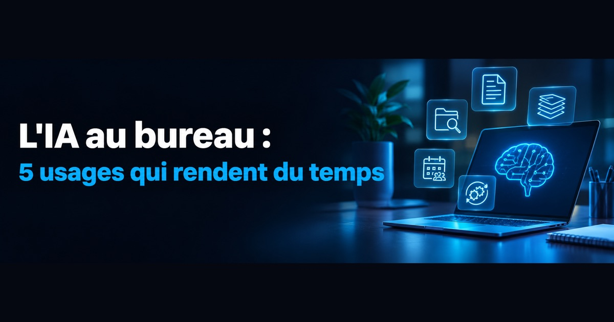

Publié le 16 novembre 2026. Chiffres et recommandations vérifiés à cette date sur les sources officielles citées.
La réponse courte : l'IA rend du temps sur ce qui est long à produire et rapide à vérifier
Les cinq usages qui rendent le plus de temps à un dirigeant sont les premiers jets de textes, la synthèse de documents longs, le tri et l'extraction d'informations, la préparation et le compte rendu des réunions, et l'automatisation des tâches répétitives. Leur point commun : la production prend du temps, la vérification en prend peu. Quand c'est l'inverse — un chiffre à contrôler ligne par ligne, une décision à justifier —, l'IA déplace le travail au lieu de le réduire.
Ces usages ne sortent pas d'un catalogue : ce sont ceux que les entreprises adoptent déjà. Selon le baromètre France Num 2026 de la Direction générale des Entreprises, publié le 28 septembre 2026 sur plus de 9 000 entreprises, 40 % des TPE-PME utilisent désormais une solution d'IA. Elles s'en servent d'abord pour générer du texte, de la voix ou des images (34 %), puis comme assistant ou outil de recherche d'informations (24 %), pour analyser ou classer des documents (13 %) et pour automatiser des tâches (11 %).
1. Les premiers jets : mails, propositions, comptes rendus
Le premier usage à installer est la rédaction d'un premier jet que vous corrigez, jamais d'un texte que vous envoyez tel quel. Réponse à une réclamation, relance d'un devis, présentation d'une offre, note interne : vous donnez le contexte, le destinataire et le ton, l'outil propose une version, vous la reprenez.
- Ce qui fait la différence. Une consigne précise — à qui, pourquoi, quelle longueur, quel ton — et un exemple de vos propres textes. Sans cela, le résultat est générique et la relecture coûte plus que l'écriture.
- Ce qu'il faut garder pour vous. Les engagements : prix, délais, conditions. L'outil peut formuler une phrase plausible et fausse avec assurance.
2. Les synthèses : lire moins, comprendre autant
Le deuxième usage consiste à faire résumer un document long avant de décider s'il mérite une lecture complète. Appel d'offres, rapport, compte rendu d'assemblée, texte réglementaire : demandez les points clés, les obligations et les dates, puis vérifiez chaque point important dans le document d'origine.
La règle de prudence est simple : un résumé sert à trier, pas à citer. Quand une décision en dépend, c'est le texte source qui fait foi — l'outil peut omettre une exception ou mal lire un tableau.
3. Le tri et l'extraction : factures, contrats, demandes entrantes
Le troisième usage est de faire classer des documents ou d'en extraire des informations — montant, échéance, nom du fournisseur, objet d'une demande — pour ne traiter vous-même que ce qui le mérite. C'est l'usage « analyse ou classification de documents » du baromètre France Num, utilisé par 13 % des TPE-PME, en hausse de 7 points en un an.
Deux réserves. D'abord, les documents contiennent souvent des données personnelles : anonymisez-les avant de les confier à un outil grand public. Ensuite, un outil qui trie ou classe des candidatures relève des systèmes d'IA « à haut risque » de l'AI Act, avec des obligations propres — ce n'est pas un usage à improviser.
4. Les réunions : préparer, puis garder une trace
Le quatrième usage couvre l'avant et l'après réunion : ordre du jour à partir de vos notes, puis compte rendu structuré avec décisions, responsables et échéances. Dicter vos notes en sortant d'un rendez-vous et les faire mettre en forme suffit souvent à éviter la demi-heure de rédaction du soir.
Si vous enregistrez ou transcrivez une réunion, prévenez les participants : leur voix et leurs propos sont des données personnelles. Et relisez la liste des décisions avant de la diffuser : c'est elle qui engage.
5. Les tâches répétitives : relances, saisies, publications
Le cinquième usage ne demande plus d'ouvrir un assistant : il s'agit d'enchaîner automatiquement des tâches qui reviennent chaque semaine, avec l'IA à une étape précise du circuit. Relance d'un devis resté sans réponse, saisie d'une demande de contact dans un tableau, préparation d'une publication : c'est l'usage le moins répandu (11 % des TPE-PME selon France Num) et celui qui demande le plus de préparation.
C'est aussi là qu'une erreur se répète sans que personne la voie. Commencez par une seule tâche, avec une étape de validation humaine, avant d'en ajouter d'autres. Nous détaillons ce type de circuit sur notre page e-mails et relances automatisés.
Les règles qui évitent de perdre le temps gagné
Trois règles suffisent : partir d'une tâche réelle, ne pas confier de données personnelles, et relire tout ce qui engage l'entreprise. Elles reprennent les recommandations de la CNIL sur le déploiement d'une IA générative, publiées le 18 juillet 2024 : partir d'un besoin concret, définir une liste d'utilisations autorisées et interdites, ne pas fournir de données personnelles au système, former et sensibiliser les utilisateurs.
Elles rejoignent l'obligation de l'article 4 de l'AI Act : depuis juillet 2026, une entreprise dont les salariés utilisent un outil d'IA doit prendre des mesures pour développer leur maîtrise de l'IA. Nous en détaillons le contenu dans notre article sur l'AI Act et l'obligation de formation des PME.
Comment mesurer le temps réellement gagné
Chronométrez une tâche récurrente sans IA, puis avec IA relecture comprise, sur trois ou quatre occurrences : c'est le seul chiffre qui vaille pour votre entreprise. Nous ne publions pas de « nombre d'heures gagnées par semaine » : le gain dépend de la tâche, de la qualité des consignes et du temps de vérification, et les chiffres généraux qui circulent ne disent rien de votre cas.
- Choisissez une tâche que vous faites au moins chaque semaine, par exemple les relances de devis ;
- Mesurez le temps actuel, de l'ouverture du dossier à l'envoi ;
- Refaites-la avec l'outil, en comptant la rédaction de la consigne et la relecture ;
- Gardez l'usage seulement si l'écart tient sur plusieurs occurrences, puis passez à la tâche suivante.
Si vous partez de zéro, notre guide formation IA pour débutant propose un parcours de quatre semaines construit sur ce principe.
Ce que nous faisons avec vous
Nous partons de vos tâches réelles, choisissons avec vous les deux ou trois usages qui comptent, et formons vos équipes sur leurs propres documents et outils. C'est le principe de notre formation IA en entreprise ; quand un usage doit tourner seul, nous le mettons en place avec nos agents IA et automatisations.
Nous ne sommes pas certifiés Qualiopi : nos formations ne sont pas finançables par le CPF. Elles sont chiffrées dans un devis ferme, après un audit de 30 minutes.
Questions fréquentes
Quel usage de l'IA fait gagner le plus de temps à un dirigeant ?
Celui qui porte sur une tâche que vous faites souvent, longue à écrire et rapide à relire : les premiers jets de mails, de propositions ou de comptes rendus. C'est aussi l'usage le plus répandu : selon le baromètre France Num 2026, 34 % des TPE-PME utilisent l'IA pour générer du texte, de la voix ou des images.
Combien de temps peut-on gagner avec ChatGPT ou un autre assistant ?
Nous ne donnons pas de chiffre général : le gain dépend de la tâche, du temps de relecture et de la qualité de vos consignes. La seule mesure fiable est la vôtre : chronométrez une tâche récurrente sans IA, puis avec IA relecture comprise, sur plusieurs occurrences.
Peut-on confier des données clients à un outil d'IA ?
Avec prudence. La CNIL recommande de ne pas fournir de données personnelles au système et de définir une liste d'usages autorisés et interdits. Vérifiez aussi les réglages de l'outil sur la réutilisation de vos conversations, et préférez des documents anonymisés.
Faut-il une formation pour utiliser ces usages ?
Pas pour commencer, mais elle accélère la prise en main et limite les erreurs. Depuis juillet 2026, l'article 4 de l'AI Act demande aussi aux entreprises de prendre des mesures pour développer la maîtrise de l'IA des personnes qui l'utilisent pour elles.
Les formations IA de Fiducia IA sont-elles finançables par le CPF ?
Non. Fiducia IA n'est pas certifié Qualiopi et ses formations ne préparent pas à une certification enregistrée. Ce sont des formations sur mesure, construites sur les tâches et les outils de l'entreprise, chiffrées dans un devis ferme après un audit de 30 minutes.